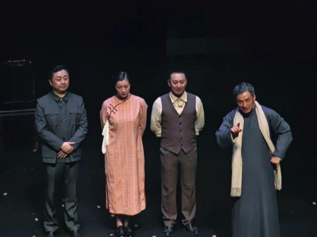

Drama

Museum
Welcome to my personal website. I'm Wang Linling, an explorer in the field of communication studies. During my undergraduate years, I participated in research on the social impact of online films and fan culture surrounding virtual idols. I also gained valuable practical experience as an event planning intern for the YesGO project at Beichen Youth. Courage and enthusiasm for exploring new things are my greatest assets, which is why I have a wide range of interests, particularly in stage plays and movies. I look forward to connecting and exchanging ideas with everyone.
In fact, I am still exploring my research interests. During my undergraduate studies, I made some attempts in areas such as virtual idols and the cultural and economic impact of film and television companies, focusing primarily on fan economy, idol economy, media management, the influence of new technologies on fan economy, and media culture. My work has involved both theoretical explanations and structural analyses of these phenomena. Additionally, I have a strong interest in feminism, media culture, and the history of communication. I hope to build upon my previous research experience and further deepen my studies in these fields.
In general, I have a wide range of hobbies and am always eager to try new experiences. I am passionate about traveling and enjoy watching stage performances. When I travel, I love visiting local museums, as I believe they offer a deeper understanding of the region's culture and history. When it comes to stage performances, I am open to various forms, including plays, musicals, and dance dramas. In my free time, I also enjoy watching movies and playing video games.
Drama
Museum
Museum
Drama